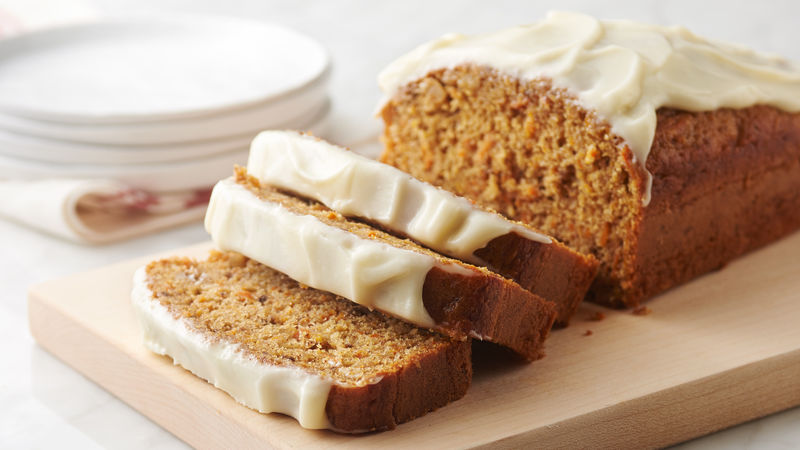

Carrot Loaf

Carrot cake is delicious, but sometimes a loaf is better. So here's a carrot loaf recipe, because sometimes, well, a loaf is
better then a cake. At least we think that! ...Huh? You like cake better? Ok that's fine. ...No I mean I get why you could like
cake better, but a loaf just seems better to me so... ...Well how about you just try this recipe? ...I not trying to force you,
but you're on a carrot loaf recipe page so obviously you're interested, so just give it a try, then like, next week, make a
cake or something if you want a cake so bad jeez. ...Ok so then make a cake next month if that's too soon for you. I don't
know what to tell you just try the damn recipe or not! 🙄
Recipe Source
Ingredients
The Loaf
- 1 cup granulated white sugar
- 1/2 cup vegetable oil
- 1 1/2 cups carrots, grated, well packed
- 1 cup walnuts, or pecans, finely chopped (optional)
- 2 large eggs
- 1 cup all purpose flour
- 1 tsp. baking soda
- 1 tsp. baking powder
- 1/2 tsp. cinnamon
- Pinch of salt
The Frosting
- 4 oz. cream cheese, at room temperature
- 2 Tbsp butter, at room temperature
- 1 tsp. vanilla
- 1 1/2 cups icing/confectioners' sugar
Instruction
- Preheat oven to 350F.
- In a medium bowl, whisk together the flour, baking soda, baking powder, cinnamon and salt. Set aside.
- Line a 4 1/2 x 10-inch or 9 x 5-inch loaf pan with parchment paper and set aside. *I like to just line the
bottom and long sides with one sheet of parchment, overhanging the sides by an inch or so, to use as handles
to lift it out of the pan later.
- In a large bowl with an electric beater or the bowl of a stand mixer fitted with a paddle attachment, cream
together the white sugar and oil. Add the shredded carrots and mix in. Add the eggs and beat in. Add the
nuts and stir to combine. Stir in the flour mixture and mix until well combined.
- Pour batter into prepared baking pan.
- Bake in preheated oven for 40-50 minutes, or until a tester inserted in the centre comes out clean.
*A lot of factors can affect baking time. Every oven is different and the type of baking pan you use can
also affect the baking time. You loaf might take longer. As such, you must test the loaf with a long skewer
or tester (so it reaches into the very centre of the loaf) before taking it out of the oven. It should come
out clean. If in doubt, leave it in the oven a bit longer.
- Cool the loaf in the pan for 15 minutes, then lift out to a cooling rack to cool completely.
- To make frosting: Beat together the cream cheese, butter and vanilla. Add the icing sugar and beat until fluffy
and smooth.